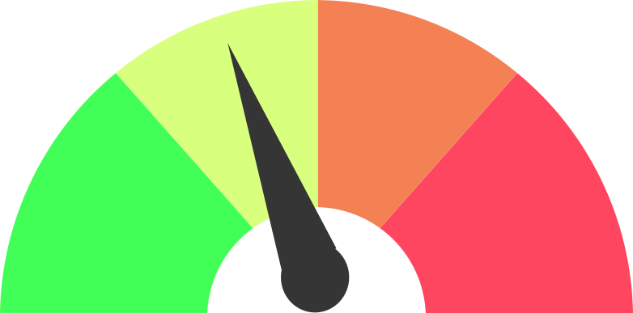

Nivel de ciber-riesgo mundial

|
Todo se ve bien. No hay amenazas significativa descubiertas. |
|  | Estamos en el proceso de rastreo de una nueva amenaza posiblemente significativa. Se recomienda que los usuarios tomen providencias inmediatas para contener el impacto. |
 |
Una interrupción importante en la conectividad es inminente o en progreso. |
 |
Pérdida de conectividad a través de la red. |
Fuente: SANS Institute
Historial de ataques mundiales
| Fecha | Estado | Motivo |
|---|---|---|
| May 12th 2017 | Yellow | WannaCry Ransomware Worm |
| December 21st 2016 | Yellow | Juniper ScreenOS VPN Backdoor |
| April 16th 2015 | Yellow | MS15-034 IIS HTTP.sys DoS Vulnerability |
| Jan 23 2015 | Yellow | Adobe Flash Vulnerabilities |
| Sep 26 2014 | Yellow | Bash Shellshock |
| Apr 08 2014 | Yellow | OpenSSL Heartbleed |
| Mar 16 2012 | Yellow | MS12020 Windows RDP Vulnerability |
| Sep 28 2010 | Yellow | MS10070 |
| Jul 19 2010 | Yellow | LNK Vulnerability in Windows |
| Jul 13 2009 | Yellow | MS Office Web Components ActiveX |
| Oct 23 2008 | Yellow | Microsoft RPC Patch MS08067 |
| May 15 2008 | Yellow | Debian SSL Keys |
| Mar 31 2007 | Yellow | ANI Exploit |
| Mar 23-24 2006 | Yellow | createTextRange exploit |
| Dec 31st 2005-Jan 5th 2006 | Yellow | WMF flaw |
| Dec 27th 2005 | Yellow | WMF flaw |
| Nov 21-22 2005 | Yellow | Window() MSIE 0-day |
| Oct 19-20 2005 | Yellow | Snort Exploit |
| Aug 12-18 2005 | Yellow | PnP Bot/Worm (Zotob) |
| May 1-4 2004 | Yellow | Sasser Worm |
| Mar 20-22 2004 | Yellow | Witty Worm |
| Sep 10-12 2003 | Yellow | RPC exploit |
| Aug 11-15 2003 | Yellow | MSFT Blaster |
| Mar 17-20 2003 | Yellow | IIS WebDav Exploit |
| Jan 25-28 2003 | Yellow | SQL Slammer |
| Sep 19 2002 | Yellow | Slapper Worm |